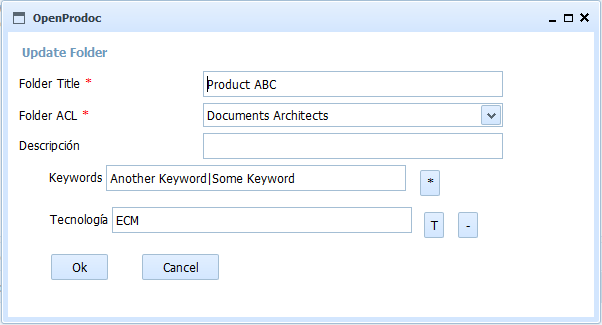

This form allows you to modify the folder selected by entering all the common metadata and folder type specific metadata. This form does not choose the folder type, which can not be changed after inserting the folder, and allows you to modify security (ACL). In addition to the metadata common to all OPD folders, metadata specific to that type appear for verifying/modifying the values.

You can enter/modify at least the following information:
Required fields for each document type are highlighted. By placing the cursor or mouse over each field, it whill be showed a tiptool with information on the field and (in the case of fields of type date or time) the expected format. The fields of type date / time values must be valid and follow the expected format, otherwise the field is cleared and the value is rejected.
In the event of an error (lack of user permissions, communication error, incorrect date, etc.), the operation is canceled and the user will communicate the reason for the error.